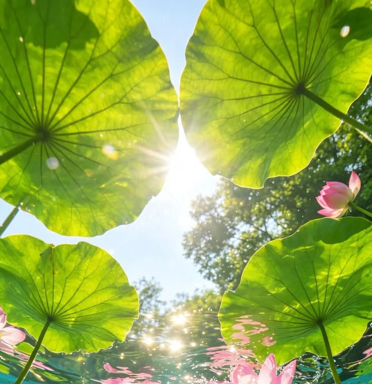

Building a thriving, self-sustaining outdoor guppy pond is an exquisite blend of natural ecology and aquatic artistry. Unlike artificial indoors aquariums reliant on mechanical filters and synthetic lighting, outdoor tubs leverage real sunlight, natural micro-fauna, and botanical balances to unlock maximum fin expression, biological vitality, and peak coloration in high-grade Poecilia reticulata lines.
Whether you are cultivating purebred lines or establishing a low-maintenance patio tub, adhering to foundational outdoor ecosystem principles guarantees pristine water clarity, abundant natural nutrition, and robust thermal resilience. Here are the 10 quintessential rules for setting up a natural outdoor guppy sanctuary.

Ecosystem Architecture & Design
01. Container Selection & Thermal Mass
Choose non-toxic, UV-resistant containers with high thermal inertia. Large terracotta basins, food-grade HDPE dark tubs, or insulated glass-fiber tubs (minimum 15–30 gallons) protect fish from drastic day-to-night temperature swings. Dark interiors enhance natural iridophore color contrast while mimicking natural creek beds.
02. Strategic Solar Positioning
Position your pond where it receives 4 to 6 hours of indirect morning sunlight and shaded afternoon protection. Full full-day direct sun can cause extreme heat spikes and aggressive green water blooms, while morning sun stimulates photosynthesis in live plants and activates crucial carotenoid pigment synthesis in guppies.
03. Botanical Tannin & Humic Conditioning
Incorporate dried Indian Almond leaves (Terminalia catappa), Guava leaves, or alder cones into the substrate. As they decompose naturally, they release beneficial tannins, humic acids, and mild antibacterial compounds that condition soft rainwater, reduce stress, and maintain ideal organic water balance.

04. Heavy Floating Flora Filtration
Floating plants act as the living engine of filterless outdoor ponds. Species such as Salvinia natans, Water Lettuce (Pistia stratiotes), and Amazon Frogbit rapidly consume nitrates and ammonia through their roots. Their dense hanging root networks also create a natural jungle shelter for newborn fry to hide from adults.
05. Natural Mineral Buffering
Rainfall can deplete mineral levels and trigger sudden acidic pH crashes. To counteract soft rainwater acidity, line the bottom or place a small mesh bag containing crushed eggshells, crushed coral, or calcite substrate. This slowly leaches essential calcium and magnesium ions into the water, securing a steady 8–12 dGH for robust fin expansion.
06. Oxygenation & Submerged Vegetation
In addition to floating vegetation, plant oxygenating submerged species such as Hornwort (Ceratophyllum demersum), Anacharis, or Cabomba. These submerged plants release dissolved oxygen directly into the water column during peak photosynthesis and absorb excess nutrient waste.
07. Live Infusoria & Micro-Fauna Cultivation
Establish your pond 2 to 3 weeks prior to introducing fish. Sunlight and decaying botanical organic matter encourage the proliferation of beneficial micro-fauna including infusoria, ostracods (seed shrimp), daphnia, and green micro-algae biofilms—providing fry with continuous, high-protein live food 24/7.

08. Overflow Protection & Rain Management
Heavy torrential downpours can cause outdoor tubs to overflow and flush out valuable fish and fry. Drill fine mesh-covered overflow weep holes 2 inches below the top rim of your tub, or construct a natural gravel drainage spillway to allow excess rainwater to exit safely without fish escape.
09. Biosecurity & Predator Defense
Outdoor ponds attract dragonflies (whose nymphs prey on fry), birds, cats, and frogs. Cover your pond with fine stainless steel mesh or dark protective netting, elevated slightly above floating plants. This allows sunlight and rain to enter while completely locking out airborne and terrestrial predators.
10. Low-Intervention Stocking & Balance
Maintain low stocking densities to preserve ecological balance (e.g., 1 trio of adult guppies per 10 gallons of water). Resist the urge to overfeed with dry pellets; let the guppies forage naturally on mosquito larvae, algae, and micro-crustaceans, supplementing only lightly with high-quality protein flakes.
| Component | Outdoor Ecosystem Role | Recommended Spec / Type |
|---|---|---|
| Container Tub | Thermal buffer & dark reflective background | 15–50 Gallon HDPE or Terracotta |
| Surface Cover | Nitrate reduction & fry sanctuary | Salvinia Natans / Water Lettuce (40% Surface) |
| Substrate & Buffers | Humic acid release & pH crash defense | Dried Guava Leaves + Crushed Calcite Bag |
| Predator Barrier | Protects from birds, cats & dragonfly larvae | Fine Stainless Steel Mesh Canopy |
By honoring these 10 principles of outdoor botanical culture, your guppies will achieve unmatched color intensity, exceptional fin growth, and peak genetic health naturally.